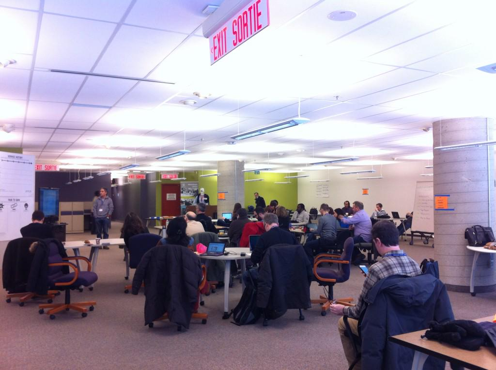

Open Data
an introduction
Open Data Ottawa
Open Data Ottawa
Richard Akerman
John Girgis
Matt Leduc
Kitt McGoveran
Edward Ocampo-Gooding
Sarah Simpkin
Denis Zgonjanin
HUb Ottawa
thanks for the great space!
Open Data Ottawa

Founded 2010
Hackfests!


#hackUObiblio 2014

International Open Data Day 2015
Open Data Municipal Legislation!
That Council […] adopt the principles of Open Government, as described in this report, and declare the City of Ottawa data to be ‘Open’ […] – Spring, 2010
Open Data Day!

Open Data
WTF?
Open Data is...
Freely Accessible
And
Machine Readable
(and free to distribute/modify)
Mmmm...raw data

Mmmm...raw data on a map

Ottawatrash.ca

Dog park finder

Fix my street

Expense Visualizer

MBTA Visualizations


Sweet music
Sweet music

Where is this data?
Cities

National Governments

Intl' Organizations

In Space

You

Open Street Maps
What is geodata?
Vector: Lines, polygons

Vector: Points

Raster: Satellite imagery, scanned maps, etc.

Coordinates

Addresses (can be geocoded)

Census tracts

What is (useful) geodata?
Tagged as "geodata", but is it usable?

Open geospatial data
Geogratis launched in 1997
Free vector and raster datasets of Canadian landmass to the public
First Federal-level free open data set
NRCan has uploaded most of the dataets available on data.gc.ca
Formats: shp, kml, kmz, txt, xls + coordinate info
Why do cities release data?
Cheap infrastructure
Low-ish barrier to entry
Rewards at web-scale
Because it is awesome
Demos
City councillors by ward [Ottawa]
full tutorial available | source: http://data.ottawa.ca/dataset/elected-officialsTimeMapper Faces of WWII
have an interest in open data?
perfect - that's all you need!
problem:
"hack event fatigue"
objective:
create a regularly scheduled, informal event for people to come together and chat about open data
open data book club
data of the month
constructon and demolition permits
National Household Survey data by city ward
implementation
tool: meetup.com/open-data-ottawa
venue: local pub with wifi and computer hookups
format: present or watch and learn
vibe: open and inclusive
added bonus: supports digital and data literacy